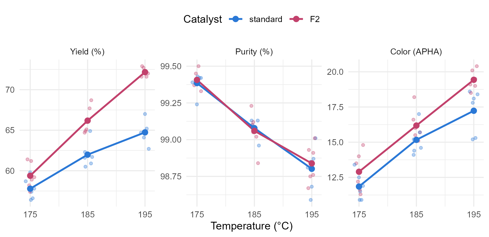

Module 3 · Lesson 8 of 13 Week 54 of 160 About 5–7 hours
Factorial MANOVA
Two factors, three responses, and an interaction to untangle
Analyze a two-factor experiment with several responses: split the total SSCP matrix into main effects, interaction and error, test the interaction first, find the responses that carry it with univariate follow-ups, report simple effects, treat a quantitative factor as a number, and handle a lost run with Type II tests.
In Lesson 2.14, a follow-up experiment tested the new catalyst F2 against the standard one at three temperatures, and found that F2’s yield advantage grows with the heat. Before switching catalysts, the plant repeated the experiment at the pilot plant, this time measuring three responses on every run. The yield is why F2 was bought. The purity and the color are what the customers pay for.
Two factors and three responses make a factorial MANOVA. The questions are the ones of Lesson 2.14, asked of all three responses at once. Does the catalyst change the product? Does the temperature? And does the catalyst’s effect depend on the temperature?
Two knobs, three taste testers! The trick is the same as in Lesson 2.14: always ask about the interaction first.
In this lesson you’ll:
- split the total SSCP matrix into two main effects, an interaction and error
- test the interaction first, then the main effects
- find the responses that carry an effect, with univariate follow-ups
- report simple effects when the interaction is real
- treat a quantitative factor as a number, to sharpen the tests
- handle a lost run with Type II tests
The pilot-plant experiment
Each of the 2 × 3 combinations of catalyst and temperature was run 6 times, 36 runs in all, in random order. Here’s each response against the temperature, with the cell means joined up, one line per catalyst:
long <- fq |>
tidyr::pivot_longer(c(yield_pct, purity_pct, color_apha), names_to = "response", values_to = "value") |>
mutate(response = factor(response, levels = c("yield_pct", "purity_pct", "color_apha"),
labels = c("Yield (%)", "Purity (%)", "Color (APHA)")))
cell_means <- long |> group_by(response, catalyst, temp_C) |> summarise(value = mean(value), .groups = "drop")
ggplot(long, aes(x = temp_C, y = value, color = catalyst)) +
geom_point(position = position_jitter(width = 0.8, height = 0, seed = 1), alpha = 0.35, size = 1.2) +
geom_line(data = cell_means, linewidth = 0.9) +
geom_point(data = cell_means, size = 2.4) +
scale_color_manual(values = c(standard = "#2a78d6", F2 = "#C2416C"), name = "Catalyst") +
scale_x_continuous(breaks = c(175, 185, 195)) +
facet_wrap(~ response, scales = "free_y") +
labs(x = "Temperature (°C)", y = NULL) +
theme_minimal(base_size = 11) +
theme(legend.position = "top")
Each response tells its own story:
- Yield: both catalysts gain from the heat, and F2 gains more. Its advantage is 1.6 points at 175 °C, 4.2 at 185 °C and 7.4 at 195 °C. The lines spread apart: an interaction, as in Lesson 2.14.
- Purity falls with the heat, by about 0.3 percentage points per 10 °C, the same with both catalysts.
- Color rises with the heat, and F2’s product is a little darker, by 1 to 2 APHA units at each temperature. The lines are close to parallel.
Your turn. The setup code has loaded the 36 runs as fq, with the catalyst and the temperature as factors (catalyst and temp) and the temperature as a number (temp_C). Compute the cell mean vectors: the mean of each response for every combination of catalyst and temperature.
Group by both factors: the catalyst and the temperature, temp_C.
fq |>
group_by(catalyst, temp_C) |>
summarise(across(c(yield_pct, purity_pct, color_apha), mean), .groups = "drop")Six rows, one mean vector per cell. The yield climbs from 57.8% to 64.7% with the standard catalyst, and from 59.4% to 72.2% with F2.
The two-way MANOVA model
With a levels of factor A (the catalyst), b levels of factor B (the temperature) and n runs per cell, the model for run k in cell (i, j) is the two-way ANOVA model of Lesson 2.14 with vectors in place of numbers:
\mathbf{x}_{ijk} = \boldsymbol\mu + \boldsymbol\alpha_i + \boldsymbol\beta_j + \boldsymbol\gamma_{ij} + \mathbf{e}_{ijk}, \qquad \mathbf{e}_{ijk} \sim N_p(\mathbf{0}, \Sigma) ,
where \boldsymbol\alpha_i and \boldsymbol\beta_j are the main effects and \boldsymbol\gamma_{ij} is the interaction. The total SSCP matrix splits into four parts, and so do its degrees of freedom:
T = H_A + H_B + H_{AB} + E, \qquad abn - 1 = (a-1) + (b-1) + (a-1)(b-1) + ab(n-1) .
Here, that’s 35 = 1 + 2 + 2 + 30. Each H matrix is tested against E exactly as in one-way MANOVA (Lesson 6): Wilks’ lambda for the interaction is \det(E)/\det(E + H_{AB}), and all four statistics come from the eigenvalues of E^{-1}H_{AB}. A term with h degrees of freedom has at most \min(p, h) non-zero eigenvalues.
In a balanced design like this one, with the same number of runs in every cell, the split is unique, and the order of the terms in the model doesn’t matter. (The end of the lesson shows what happens when a run is lost.)
Your turn. Fit the two-way MANOVA with both main effects and the interaction.
catalyst * temp is shorthand for catalyst + temp + catalyst:temp.
fit <- manova(cbind(yield_pct, purity_pct, color_apha) ~ catalyst * temp, data = fq)
summary(fit)All three terms are significant. The interaction has Pillai’s trace 0.58, F = 3.97 on 6 and 58 degrees of freedom, p = 0.002. The catalyst’s main effect has p = 2 \times 10^{-10}, and the temperature’s p = 10^{-6}.
The SS part of summary(fit) holds the four SSCP matrices. E/30 is the pooled covariance matrix within the cells, and its correlations show why a joint analysis pays. Within a cell, the runs with a higher yield had a lower purity: the correlation is −0.50. A MANOVA uses that correlation, and three separate ANOVAs ignore it.
Your turn. Compute Wilks’ lambda for the interaction from the SSCP matrices.
names(ss) shows the names of the four matrices. The interaction’s is "catalyst:temp".
ss <- summary(fit)$SS
names(ss)
E <- ss[["Residuals"]]
H_AB <- ss[["catalyst:temp"]]
det(E) / det(E + H_AB)\Lambda = 0.43, the same as summary(fit, test = "Wilks") gives. The eigenvalues of E^{-1}H_{AB} are 1.26 and 0.025 (the third is zero, since the interaction has 2 degrees of freedom). So nearly all of the interaction lies in a single direction.
Interaction first, then follow-ups
As in Lesson 2.14, look at the interaction before the main effects. Here, it’s real: the catalyst’s effect on the product depends on the temperature. So “F2 adds 4.4 points of yield” is an average over three different advantages, and the catalyst’s main effect, significant as it is, doesn’t tell the whole story.
Which responses carry the effects? Univariate ANOVAs of each response answer that, as in Lesson 6, and summary.aov(fit) runs all three at once. For the yield, the interaction is strong (F = 13.1, p = 0.00008). For the purity, only the temperature matters: the catalyst has no detectable effect (p = 0.71), and neither does the interaction (p = 0.81). With three responses, a cautious analyst compares each p-value with 0.05/3 = 0.017, and these conclusions survive that.
The assumptions are those of Lesson 6, cell by cell. With only six runs per cell, the cells’ standard deviations bounce around a lot by chance (from 0.55 to 1.65 for the yield), and Box’s M test across the six cells gives p = 0.07: no clear evidence that the covariance matrices differ.
Your turn. Run the univariate ANOVA for the color.
The color’s column is color_apha.
anova(lm(color_apha ~ catalyst * temp, data = fq))No interaction for the color (p = 0.38), but both main effects (p = 0.001 for the catalyst). The temperature darkens the product, and F2 darkens it by 1.4 APHA units more, on average. F2’s extra color ranges from 1.0 to 2.2 units across the three temperatures, but that’s no more variation than chance explains: that’s what p = 0.38 says. Without an interaction, the main effect is a fair summary.
Simple effects
When the interaction is real, report simple effects: the catalyst’s effect at each temperature. For one response, a simple effect is the difference of two cell means. Each cell mean averages 6 runs, so its standard error is \sqrt{\text{MSE}\,(1/6 + 1/6)}, which for the yield is 0.81 points.
For all three responses at once, a simple effect is a contrast of two cell mean vectors, tested with T^2 as in Lesson 7. The easiest way is the cell-means model of Lesson 7, with one mean vector per cell, ~ 0 + cell. The setup code has made the factor cell, whose six levels are standard_175, F2_175, standard_185, F2_185, standard_195 and F2_195, in that order.
Your turn. The setup code has stored the cell means as cm. Compute F2’s yield advantage at each temperature.
Subtract the standard catalyst’s mean: catalyst == "standard".
cm |>
group_by(temp_C) |>
summarise(advantage = yield_pct[catalyst == "F2"] - yield_pct[catalyst == "standard"])1.6, 4.2 and 7.4 points. With a standard error of 0.81, the advantage at 175 °C is only 2 standard errors from zero (p = 0.06), and the other two are far from it.
Your turn. Test the catalyst’s simple effect at 195 °C on all three responses: F2 at 195 °C against the standard catalyst at 195 °C.
F2_195 is the sixth cell, so it gets the weight +1.
cells <- lm(cbind(yield_pct, purity_pct, color_apha) ~ 0 + cell, data = fq)
car::linearHypothesis(cells, hypothesis.matrix = rbind(c(0, 0, 0, 0, -1, 1)))F = 40.2 on 3 and 28 degrees of freedom, p = 3 \times 10^{-10}. The same test at 185 °C gives p = 0.00006, and at 175 °C p = 0.07. So the plant’s recommendation writes itself. At 195 °C, F2 gives 7.4 points more yield, the same purity, and 2.2 APHA units more color: worth it, if the customers’ color limit has room. At 175 °C, F2 barely makes a difference.
Challenge round
Challenge 1 · Temperature is a number. The model spends 2 degrees of freedom on the temperature’s main effect and 2 more on the interaction, because it treats the three temperatures as categories. But temperature is a number, and the lines in the figure look nearly straight. Fit the model with temp_C, the temperature as a number, and compare it with the categorical model. If the straight lines fit as well, the p-value will be large.
Use temp_C, the numeric column, in the second model.
full <- lm(cbind(yield_pct, purity_pct, color_apha) ~ catalyst * temp, data = fq)
straight <- lm(cbind(yield_pct, purity_pct, color_apha) ~ catalyst * temp_C, data = fq)
anova(full, straight)p = 0.76: no evidence of curvature, so straight lines are enough. That’s a lack-of-fit test, and it pays off. In the straight-line model, the interaction has 1 degree of freedom instead of 2, and its test is much sharper (F = 11.8 on 3 and 30, p = 0.00003, against 0.002). The slopes also make a tidy report: the standard catalyst gains 3.5 points of yield per 10 °C, and F2 gains 6.4.
Challenge 2 · A lost run. Suppose run 1, a standard run at 185 °C, had been lost. With 5 runs in one cell and 6 in the others, the design is unbalanced, the SSCP matrices no longer split T uniquely, and the sequential tests of manova() depend on the order of the terms, as in Lesson 2.14:
lost <- filter(fq, run != 1)
rbind(
catalyst_first = summary(manova(cbind(yield_pct, purity_pct, color_apha) ~ catalyst * temp, data = lost))$stats["catalyst", ],
catalyst_second = summary(manova(cbind(yield_pct, purity_pct, color_apha) ~ temp * catalyst, data = lost))$stats["catalyst", ]
)
#> Df Pillai approx F num Df den Df Pr(>F)
#> catalyst_first 1 0.8194824 40.85664 3 27 3.568150e-10
#> catalyst_second 1 0.8180007 40.45075 3 27 3.981148e-10With one run missing, the difference is small, but with messier data it can be large. Run the Type II tests with car::Anova(), which test each main effect after the other.
Fit the model to lost, the 35 remaining runs.
lost <- filter(fq, run != 1)
car::Anova(lm(cbind(yield_pct, purity_pct, color_apha) ~ catalyst * temp, data = lost))The catalyst’s Type II test has Pillai’s trace 0.818, the same as the sequential test with the catalyst second: it’s tested after the temperature. The interaction’s test, 0.601, is the same in every version, because it’s always tested after both main effects. The conclusions don’t change.
Quick quiz
1. With 2 catalysts and 3 temperatures, how many degrees of freedom does the interaction have?
(a - 1)(b - 1) = 1 \times 2 = 2.
2. Why test the interaction before the main effects?
The main effects can be tested, but with a real interaction, they summarize the factor’s effect poorly.
3. The MANOVA’s interaction is significant. How do you find out which responses carry it?
Here, the yield carries it, and the purity and the color don’t.
4. Within the cells, the yield and the purity are correlated (−0.50). What does the MANOVA do with that correlation?
E holds the cross-products as well as the sums of squares, so the tests account for the correlations between the responses.
5. Why treat the temperature as a number instead of a factor?
Check the straight lines with a lack-of-fit test first, as in the challenge. Here, p = 0.76.
6. One run is lost, so the design is unbalanced. What changes?
The interaction is tested last in every order. For the main effects, use Type II tests, car::Anova().
Wrap-up
You can now analyze a factorial experiment with several responses! Here’s what you’ve learned:
- The two-way MANOVA model splits the total SSCP matrix into H_A, H_B, H_{AB} and E, and tests each H against E with the usual four statistics.
- Interaction first: if it’s real, report simple effects instead of main effects. A multivariate simple effect is a contrast of cell mean vectors, tested as in Lesson 7.
- Univariate follow-ups show which responses carry each effect. Here, the yield carries the interaction, the purity only depends on the temperature, and the color has two additive main effects.
- A quantitative factor can be treated as a number. A lack-of-fit test checks the straight lines, and fewer degrees of freedom make sharper tests.
- Unbalanced data make sequential tests depend on the order of the terms. Type II tests,
car::Anova(), don’t. - The pilot plant’s answer: at 195 °C, F2 gives 7.4 points more yield with the same purity and slightly more color. At 175 °C, it barely helps.
TipPractice in RStudio (optional, about an hour)
Download factorial_quality.csv into your project’s data-raw/ folder.
- HE plots. The heplots package draws a picture of a MANOVA: an ellipse for each term’s H matrix and one for E. Make
tempa factor as in this lesson, then tryheplots::heplot(lm(cbind(yield_pct, color_apha) ~ catalyst * temp, data = fq)). With the default scaling, a term is significant by Roy’s test exactly when its ellipse sticks out of the error ellipse somewhere. Which directions do the three terms point in? - Effect sizes.
heplots::etasq(fit)gives a multivariate effect size for each term, Pillai’s trace divided by the number of eigenvalues it can have. Which term has the largest effect? - All simple effects at once. Write a three-row hypothesis matrix that tests the catalyst at all three temperatures jointly in
car::linearHypothesis(). What does it test, in terms of the model’s main effects and interaction? - Compare with Lesson 2.14. Lesson 2.14’s lab experiment found F2 advantages of 2.7, 4.5 and 7.9 points at the three temperatures. Are the pilot plant’s advantages (1.6, 4.2 and 7.4) consistent with them, given their standard errors?
NoteKey words from this lesson
- Factorial MANOVA
- A MANOVA with two or more crossed factors, which tests their main effects and interactions on several responses at once.
- Interaction (multivariate)
- An effect of one factor on the mean vector that depends on the level of another factor.
- Simple effect
- The effect of one factor at a single level of another factor, reported when the interaction is real.
- Univariate follow-up
- An ANOVA of a single response after a significant MANOVA, to see which responses carry an effect.
- Lack-of-fit test
- A test of whether a simpler model, such as straight lines in a quantitative factor, fits as well as the full categorical model.
- Type II tests
- Tests of each term after all the other terms that don’t contain it, which don’t depend on the order of the terms in unbalanced designs.
NoteWant to read more?
- Penn State STAT 505, Lesson 8: Multivariate Analysis of Variance (MANOVA), sections 8.9 to 8.11. A two-way MANOVA for a randomized block design, and how to form the MANOVA table.
- Johnson and Wichern, Applied Multivariate Statistical Analysis, chapter 6, section 6.7, “Two-way multivariate analysis of variance”. The model, the SSCP split and the tests, with a worked example.
- Penn State STAT 502, Lesson 5: Multi-Factor ANOVA. The univariate background: interactions, interaction plots and simple effects.